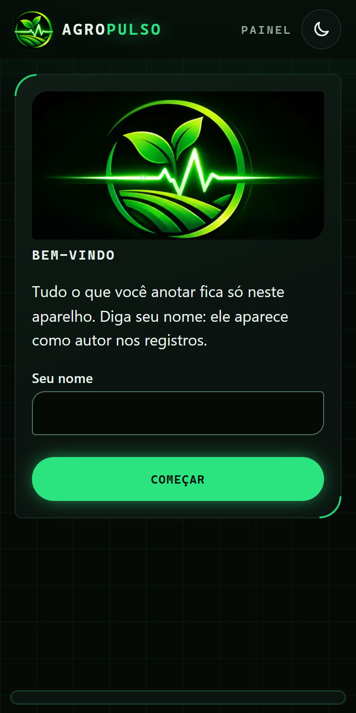
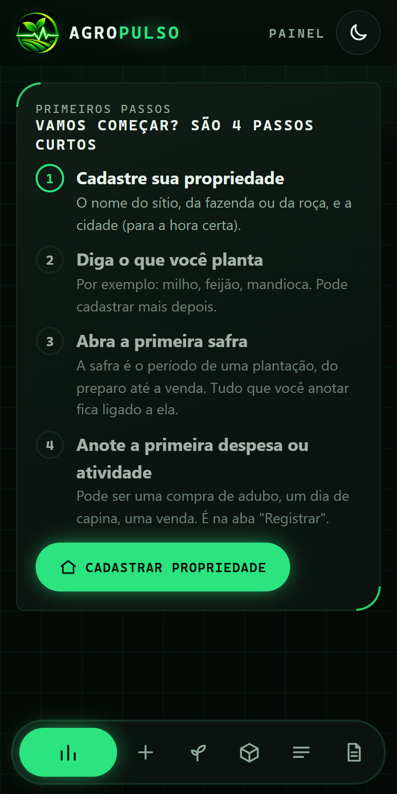
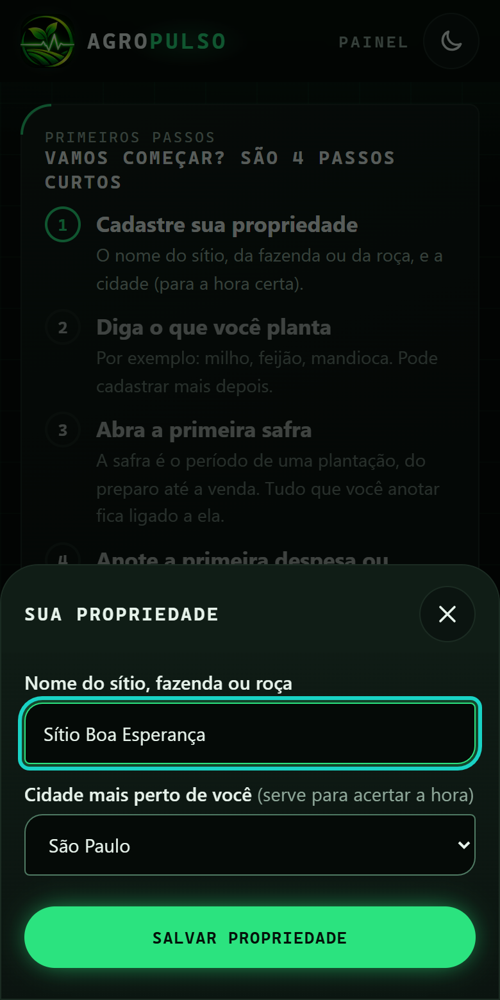
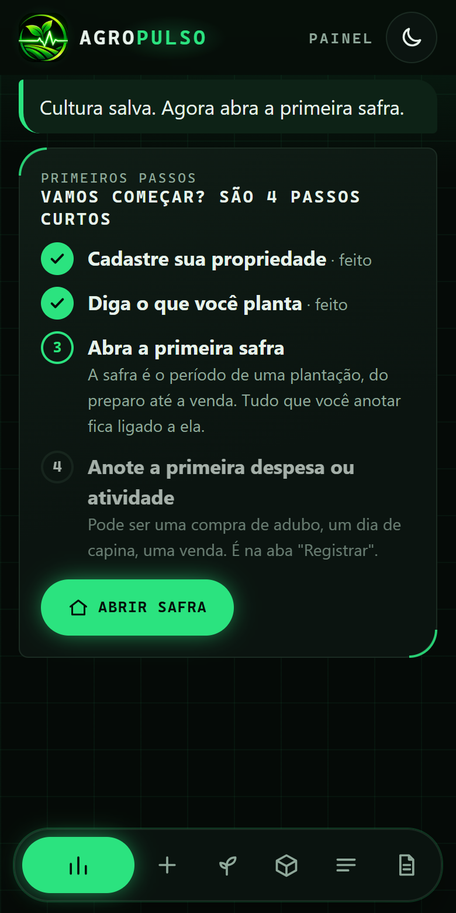
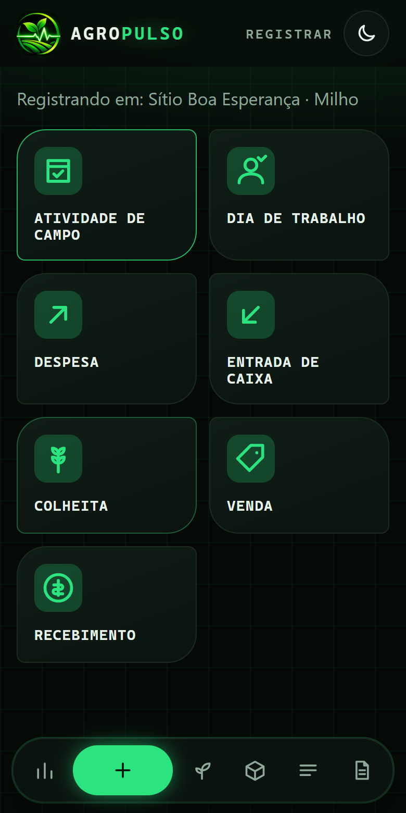
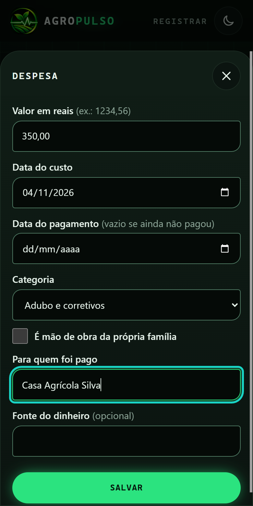
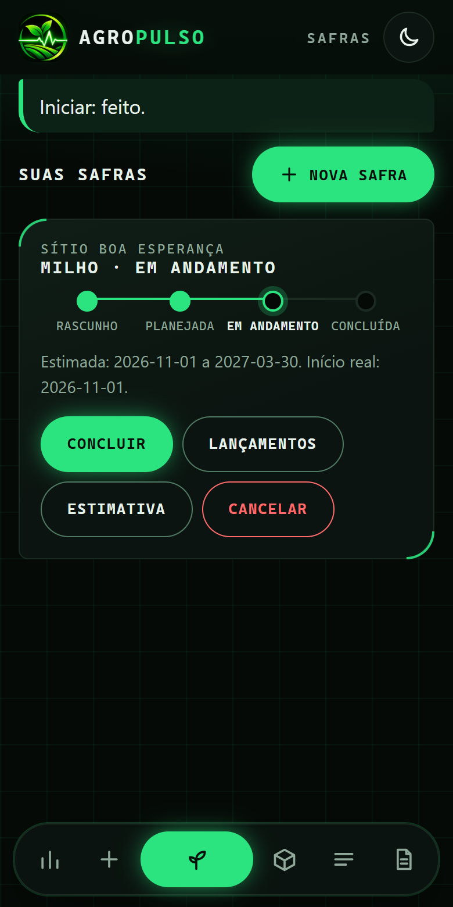
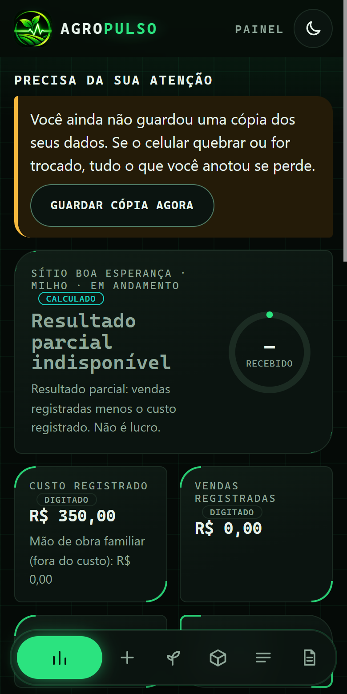
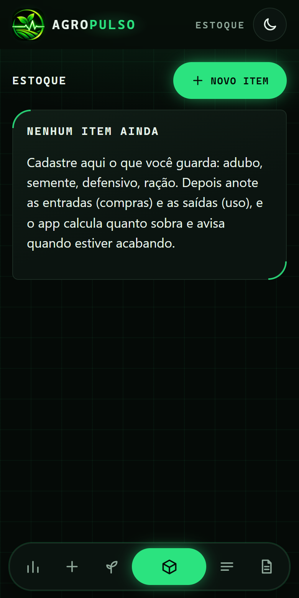
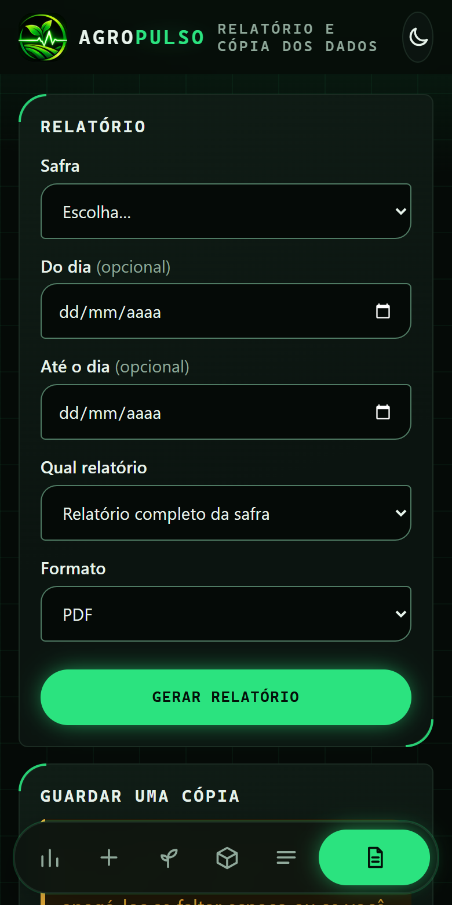

Manual do AgroPulso
O seu caderno de campo no celular.
Passo a passo, com figuras, sem complicação.
O que é o AgroPulso?
Pense num caderno onde você anota tudo da sua roça: o que gastou, o que plantou, o que colheu e o que vendeu. A diferença é que este caderno fica no celular e faz as contas sozinho.
No fim, ele mostra se a plantação está dando lucro ou prejuízo. Você não precisa saber nada de computador. Se você sabe mandar mensagem no WhatsApp, sabe usar o AgroPulso.
Neste manual
- Colocar o app no celular
- Abrir pela primeira vez
- Os 4 primeiros passos
- Registrar: anotar o que aconteceu
- Safras: cada plantação
- Painel: ver como está indo
- Estoque: o que você tem guardado
- Relatório e cópia de segurança
- Se você errou, calma: como corrigir
- Palavras que podem aparecer
1. Colocar o app no celular
O AgroPulso não vem da loja de aplicativos. Você abre um endereço e “fixa” o ícone na tela, como se fosse um aplicativo. Só precisa fazer isso uma vez, com internet.
O endereço é:
agropulso.mmsystem.tech
No iPhone
- Abra o Safari (o ícone azul parecido com uma bússola). Tem que ser o Safari, não outro navegador.
- Digite o endereço acima e toque em ir.
- Toque no botão Compartilhar (um quadradinho com uma seta para cima, na parte de baixo da tela).
- Role a lista para cima e toque em Adicionar à Tela de Início.
- Toque em Adicionar. Pronto: o ícone do AgroPulso aparece junto com seus outros aplicativos.
No Android
- Abra o Chrome.
- Digite o endereço acima e toque em ir.
- Toque nos três pontinhos no canto de cima.
- Toque em Instalar aplicativo (ou Adicionar à tela inicial) e confirme.
2. Abrir pela primeira vez
Na primeira vez, o app pergunta o seu nome. Ele serve só para aparecer como “autor” nas anotações (por exemplo, se mais de uma pessoa da família usar o mesmo celular).
- Escreva o seu nome no campo Seu nome.
- Toque em Começar.

3. Os 4 primeiros passos
Quando você entra pela primeira vez, o app mostra uma lista chamada Primeiros passos. É como uma trilha: ele diz o que fazer primeiro, depois o segundo, e assim por diante. Cada passo concluído ganha um ✔ feito. Quando os quatro acabam, a lista some sozinha.

Passo 1: cadastrar a propriedade
Propriedade é o seu sítio, fazenda ou roça. Basta dar um nome.
- Toque em Cadastrar propriedade.
- Escreva o nome. Exemplo: Sítio Boa Esperança.
- Em Cidade mais perto de você, escolha uma da lista. Isso serve só para o relógio do app marcar a hora certa.
- Toque em Salvar propriedade.

Passo 2: dizer o que você planta
Escreva o nome da cultura: milho, feijão, mandioca, o que for. Toque em Salvar cultura. Você pode cadastrar outras depois.
Passo 3: abrir a primeira safra
Safra é uma plantação do começo ao fim: do preparo da terra até vender a colheita. Escolha a propriedade e a cultura e toque em Abrir safra.
Passo 4: anotar a primeira coisa
Toque em Ir para Registrar. É o assunto do próximo capítulo.

4. Registrar: anotar o que aconteceu
É aqui que você usa o app no dia a dia. No topo aparece em qual safra você está anotando (“Registrando em: Sítio Boa Esperança · Milho”). Embaixo, vários botões. Cada um é um tipo de anotação:

| Botão | Use quando… |
|---|---|
| Atividade de campo | fez um serviço na lavoura: plantio, capina, adubação, pulverização. |
| Dia de trabalho | uma pessoa trabalhou para você (empregado, diarista ou alguém da família). O app calcula o custo. |
| Despesa | gastou dinheiro: adubo, semente, combustível, conserto. |
| Entrada de caixa | entrou dinheiro que não foi de venda da colheita. |
| Colheita | colheu. Diz quanto saiu da terra. |
| Venda | vendeu parte da colheita para alguém. |
| Recebimento | o comprador pagou (a venda inteira ou uma parte). |
Exemplo: anotar uma despesa
Você comprou adubo por R$ 350,00. Veja como anotar:
- Toque em Despesa.
- Em Valor em reais, escreva 350,00. Use vírgula para os centavos.
- Em Data do custo, escolha o dia da compra.
- Data do pagamento: se você já pagou, coloque o dia. Se ainda vai pagar, deixe vazio.
- Em Categoria, escolha o tipo do gasto (por exemplo, Adubo e corretivos). O app lembra da última que você usou.
- Em Para quem foi pago, escreva o nome da loja ou da pessoa.
- Toque em Salvar. O app avisa: “Lançamento salvo.”

Exemplo: anotar uma colheita
- Toque em Colheita.
- Escreva a quantidade colhida (por exemplo, 40).
- Escolha a unidade (saca, kg, tonelada…).
- Escolha a data e toque em Salvar colheita.
5. Safras: cada plantação
Na aba Safras aparecem todas as suas plantações. Cada uma tem uma linha do tempo com 4 paradas, como uma estrada:
Rascunho → Planejada → Em andamento → Concluída

O botão grande verde sempre faz a safra andar para a próxima parada:
- Planejar: você diz quando pretende começar e terminar.
- Iniciar: você diz o dia em que começou de verdade.
- Concluir: a safra terminou.
Outros botões:
- Lançamentos: lista o que foi anotado nesta safra, e é onde você corrige erros (veja o capítulo 9).
- Estimativa: quanto você espera colher. Depois o app compara com o que colheu de verdade.
- Cancelar (vermelho): use só se a safra não vai mais acontecer. O app pede o motivo.
6. Painel: ver como está indo
O Painel é a primeira tela. Ele junta tudo e mostra o resumo, sem você precisar fazer conta.

O que aparece nele, de cima para baixo:
- Precisa da sua atenção: avisos do dia, como cópia de segurança atrasada, tarefa que passou da data, venda que ainda não foi paga ou item do estoque acabando. Cada aviso tem um botão que leva direto ao lugar certo.
- Resultado da safra: quanto você vendeu menos quanto gastou.
- Custo registrado e Vendas registradas: o total de gastos e o total vendido.
- Despesas e vendas por mês: um gráfico simples. O botão Ver valores mostra os números em forma de lista.
- Colheita: quanto já saiu da terra.
- Pendências: dinheiro que ainda falta receber e tarefas planejadas.
- Tempo e mapa: a previsão do tempo para a sua propriedade (precisa de internet).
Tempo e mapa
Para ver a previsão do tempo, o app precisa saber onde fica a sua roça. Ele pede a localização do celular. Quando aparecer a pergunta, toque em Permitir (de preferência estando na propriedade). Se não quiser, toque em Informar o local e digite as coordenadas, ou em Desligar tempo e mapa. O resto do app funciona do mesmo jeito.
7. Estoque: o que você tem guardado
Serve para saber quanto sobrou de adubo, semente, veneno, ração, etc. O app faz a conta de entradas e saídas e avisa quando está acabando.

- Toque em Novo item.
- Escreva o nome (adubo NPK, semente de milho…).
- Escolha a unidade (kg, saco, litro).
- Se quiser, em Avisar quando chegar a, coloque um número. Quando o estoque chegar nele, o Painel avisa que está acabando.
- Toque em Salvar item.
Cada item ganha quatro botões:
- Entrada: você comprou ou recebeu mais.
- Saída: você usou. Pode dizer em qual safra usou. O app não deixa tirar mais do que tem.
- Ajuste: você contou e o número do app estava diferente. Escreva o motivo.
- Histórico: a lista de tudo que entrou e saiu.
8. Relatório e cópia de segurança

Relatório
É um papel (arquivo) com o resumo da safra, bom para mostrar ao banco, ao contador ou para guardar.
- Escolha a Safra.
- Se quiser só um período, preencha Do dia e Até o dia. Se não, deixe vazio.
- Em Qual relatório, escolha o tipo (o completo da safra, o de mão de obra por pessoa, etc.).
- Em Formato, escolha PDF (bom para ler e imprimir) ou planilha.
- Toque em Gerar relatório.
Cópia de segurança (muito importante!)
Como tudo fica só no celular, se ele quebrar, for roubado ou for trocado, as anotações se perdem. A cópia de segurança é um arquivo com tudo o que você anotou. Com ele, dá para colocar tudo de volta em outro celular.
- Role a tela do Relatório até o cartão Guardar uma cópia.
- Toque em Baixar cópia dos dados. Um arquivo é salvo no celular.
- Guarde o arquivo num lugar seguro: mande para o seu e-mail, para o WhatsApp (conversa com você mesmo) ou salve no Google Drive ou iCloud.
9. Se você errou, calma
Todo mundo erra ao digitar. O app foi feito para isso: ele não apaga as anotações antigas, para ninguém bagunçar a conta sem querer. Em vez de apagar, você corrige ou anula e escreve o motivo.
- Vá em Safras e toque em Lançamentos na safra certa.
- Ache a anotação errada na lista. Ao lado dela há um botão: Corrigir (colheita, venda e atividade) ou Anular (despesa, entrada de caixa e dia de trabalho).
- Mude o que estava errado, ou escreva o motivo da anulação, e confirme.
10. Palavras que podem aparecer
| Palavra | O que quer dizer |
|---|---|
| Safra | Uma plantação, do começo ao fim. |
| Cultura | O que você planta (milho, feijão…). |
| Lançamento | Qualquer coisa anotada, como uma despesa ou uma venda. |
| Talhão | Um pedaço do terreno, uma divisão da sua área. |
| Estimativa | O quanto você acha que vai colher. |
| Anular | Cancelar uma anotação, mas deixando registrado que ela existiu. |
| Cópia de segurança | Um arquivo com todas as suas anotações, para guardar fora do celular. |
| Mão de obra | O trabalho das pessoas: empregados, diaristas e a família. |
Perguntas que todo mundo faz
Perdi o sinal de internet. Posso continuar usando?
Pode. O app funciona sem internet. Só a previsão do tempo e o mapa precisam dela.
Apareceu “Há uma versão nova”. O que eu faço?
Toque em Atualizar agora. É só o app ficando melhor. Suas anotações não se perdem.
Outra pessoa pode ver minhas anotações?
Não. Tudo fica só no seu celular. Não existe conta, nem senha de entrada, nem nuvem.
Posso usar em dois celulares ao mesmo tempo?
Ainda não. Cada celular tem o seu próprio caderno. Para passar o caderno de um para o outro, use a cópia de segurança.
A tela ficou escura demais (ou clara demais).
No alto da tela, no canto direito, tem um botão com uma lua. Toque nele para trocar entre o tema escuro e o claro. O escuro gasta menos bateria.
Apertei um botão sem querer.
Toque no X no canto da janela para fechar sem salvar. Nada é gravado até você tocar no botão verde de salvar.
AgroPulso · caderno de campo de uso pessoal